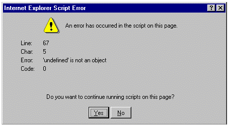
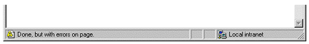
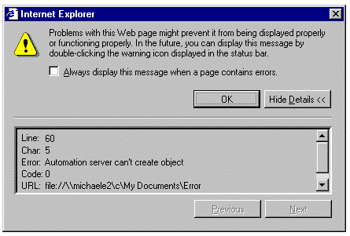
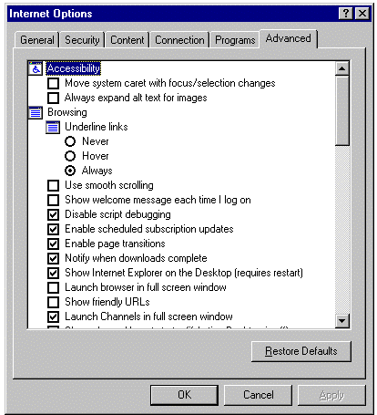

|
| ||
|
| ||
Michael D. Edwards
Software Design Engineer
Microsoft Corporation
March 11, 1999
For Part 1 of this series, click here.
Contents
Introduction
The ABCs of Run-Time Errors
Default User Scenario: The Browser Handles Your Errors
Optimal User Scenario: You Handle Your Errors
The Technical Details on Script Errors: A Peek Behind the Curtain
Handling Errors via the window.onerror DHTML Event
window.onerror: Centralized Error Handling
Handling window.onerror in VBScript
element.onerror: Decentralized Error Handling
Cross-Browser Issues
window.onerror Sample
For More Information
Handling Errors via ECMAScript 2.0 Exception Handling
Here's How It Works
Cross-Browser Issues
For More Information
Handling Errors via VBScript "On Error Resume Next"
Cross-Browser Issues
Microsoft Events Site Error-Handling Sample
For More Information
The Definitive Script Error Listing
Interpreting Those Darn Error Values
Web Page Run-Time Error Handling Techniques Compared
What's good (and bad) about window.onerror
What's good (and bad) about language-specific techniques
Summary
This article is the second in a three-part series about handling and avoiding errors on your Web pages. In the first article I discussed several types of common Web page errors, and the techniques careful developers can use to eliminate them during the development phase--before real users start browsing their site. This article focuses on one particular type of Web page error that can't be completely eliminated before users browse your site:run-time errors. I'll discuss--in considerably more detail than the first article--what happens when run-time errors occur (from both the user and developer standpoints). Then, I'll explain the technical details for handling those unavoidable run-time errors. Finally, I'll go over two samples that demonstrate how to gracefully handle common run-time error scenarios.
At the discretion of the Web page author, any of the above actions can be accompanied by a suitable message to the user explaining what happened, including what, if anything, the user can do about the situation.
The three script error notification and handling technologies that I will talk about in this article are different of course. For example, continuing script execution on the line following the line that caused an error is easy to do using VBScript's On Error Resume Next mechanism, but is not possible using the window.onerror event. So, in addition to telling you how each error-handling technology works, I'll also include information and analysis to help you make good decisions in applying them. After I describe and demonstrate each of the three error-handling technologies, I will summarize their key strengths and weaknesses, including tables that will help you quickly visualize key points.
Because not all script programmers choose to handle the script errors that occur on their pages, the browser must act as the error-handler of last resort. Unfortunately, the browser is ill prepared to do anything truly intelligent about the situation, so the resulting user experience is generally less than satisfying. For example, Internet Explorer 3.
x and 4.
x display a rather confusing (from the user point of view anyway) error message for script errors:

Figure 1. Internet Explorer 3. x and 4. x default window.onerror dialog box
Internet Explorer 5 improves the situation somewhat by hiding the default error dialog box, and instead displaying a warning icon and text message in the status bar after the page loads:

Figure 2. Internet Explorer 5 default window.onerror status bar indicator
Inquisitive Internet Explorer 5 users can double-click the status bar to display an updated default error dialog box (note how it displays the first time the user encounters a script error on a Web page, but requires the user to check the check-box in order to always display it):

Figure 3. Internet Explorer 5 default window.onerror dialog box
I personally think it is a sad situation when users have to interpret these default error messages, because most are unable to comprehend what they mean. Even savvy users generally aren't going to know what to do about your errors because they didn't write your code. Presumably the Internet Explorer 5 design team agrees with me; they decided to scale back what most users will see when the browser handles a script error for you. Yet even this new, simpler (to the user) approach isn't an optimal solution because a page with script errors is going to behave erratically with no apparent explanation. The better solution is for Web authors to take the necessary steps to handle their own errors.
Once you decide to manage the user's experience when error situations occur on your site, you'll find there's more involved than just learning the technical details for handling errors. The third installment in this series will discuss defensive coding techniques you can apply to avoid preventable errors. Usually, the hardest part is coming up with creative solutions to the error situations you can't always avoid. Good solutions involve really thinking about your code and what it is trying to accomplish for the user. The two code samples that accompany this article illustrate this process. But right now, let's focus on the "easy" part--those pesky technical details of handling errors in the first place.
Error handling for Web page scripting is based on two different paradigms that have been around for quite some time. The first is known as exception handling. Exceptions occur when code execution encounters an abnormal situation due to conditions outside the application's control. The handling part of the term refers to special code that only executes when such anomalous situations occur. For example, programming languages like C++ and Java use standard keywords and conventions for delineating and executing exception-handling procedures. In general, the purpose for exception handling is to define rules for encapsulating relevant error information in some sort of "error object", and to pass control of execution from the point of the error up to a higher level (along with the error object). Execution is passed from the point of the error by generating an exception. So in addition to defining the means for special error-handling code to handle exceptions (also called catching an exception), there is a corresponding mechanism to throw an exception. This allows an exception-handler to rethrow some exceptions to a higher-level handler. For example, if a user mistyped a filename in a file dialog, the right place to handle the exception is in the file dialog, not in the lower-level system function where the exception would first occur.
The other error-handling paradigm that influences Web page scripting is the older practice of using function calls or some other error information structure to return error codes when a problem occurs. For example, Component Object Model (COM) design guidelines specify that public COM interface methods should never throw an exception to indicate an error condition (they should use return values instead). The reason for this has to do with the language neutrality of COM method calls, and that there isn't a ubiquitous exception handling mechanism for all programming languages.
So, exactly how does this impact Web page errors? We'll go over that in detail, but here's the high-level view: There are two error-handling approaches you can take on a Web page, one based on error handling that is built into script languages, and the other based on support built into the Dynamic HTML (DHTML) object model  . Approaches based on script languages are implemented using one of the above two paradigms (function return codes and exceptions). In the VBScript language you have to check for errors by examining the return value, although you do this indirectly (as you will see). The latest versions of JavaScript (Netscape) and JScript (Microsoft) use exceptions for handling errors (prior versions didn't include built-in support for error handling). The DHTML support for error handling is based on an event model.
. Approaches based on script languages are implemented using one of the above two paradigms (function return codes and exceptions). In the VBScript language you have to check for errors by examining the return value, although you do this indirectly (as you will see). The latest versions of JavaScript (Netscape) and JScript (Microsoft) use exceptions for handling errors (prior versions didn't include built-in support for error handling). The DHTML support for error handling is based on an event model.
To understand where script errors come from it is useful to lump all the errors that Web page scripts can encounter into two categories. The first category includes only those errors that are actually "birthed" by the script engine. For example, division by zero and arithmetic overflow are two run-time script errors that are produced in the script engine. The second category includes errors that are returned to the script engine from external components accessed by a script statement. For example, if an error occurs during the execution of a method on an external component, the script engine usually just passes the error on to the person who called the method in the first place (that would be you, the script author). In this context external objects are:
So why should you care whether an error is a script engine error, or was produced by an external component? Easy: so you'll know how to find the docs that describe the error. Internal script engine errors are described in the script language reference documentation; tracking down errors returned by external objects requires you to refer to the documentation for the object you are using. Stick with me and I'll explain how you can figure out whether an error is internal or external, and I'll talk about other related goodies as well.
As Nancy Cluts describes in her great "Introduction to ASP" article, Web pages can include some script that is run only in the browser (the client) and other script that is run only on the server. That can complicate the process for determining where an error is occurring and deciding how it is best handled. For example, even though Microsoft client and server technologies use the same script engines, and thus encounter the same script errors, their default error handlers do different things with those errors. The reason for this is directly related to the different places these scripts are running. When Internet Explorer encounters a client-side script error, a dialog box with an error message can be displayed to the user. However, if Internet Information Server (IIS) did that with server-side script errors, the Web server administrator would be the only person to see the dialog box!
These differences extend to the techniques you can employ for handling errors. For example, the DHTML object model describes HTML documents displayed in the browser. Therefore only client-side script can use DHTML events to handle and avoid errors. On the other hand, the error-handling techniques that are built into the VBScript and JScript languages (as discussed in our peek behind the curtain) work for handling both client-side and server-side script errors.
As Nancy Cluts wrote in "Handling Events in Dynamic HTML," the Dynamic HTML (DHTML) Object Model  supports a set
supports a set  of client-side events--notifications that occur in response to an action. For error-handling aficionados, the most interesting DHMTL event is generated whenever a script error occurs. This is known as a onerror event
of client-side events--notifications that occur in response to an action. For error-handling aficionados, the most interesting DHMTL event is generated whenever a script error occurs. This is known as a onerror event  .
.
The DHTML window object  represents an entire HTML document, and can be used to install a single error handler for all script errors that occur anywhere on a Web page. It looks like this:
represents an entire HTML document, and can be used to install a single error handler for all script errors that occur anywhere on a Web page. It looks like this:
...
<SCRIPT language=JavaScript>
function errorHandler(message, url, line)
{
// message == text-based error description
// url == url which exhibited the script error
// line == the line number being executed when the error occurred
// handle the error here
// stop the event from bubbling up to the default window.onerror handler
// (see the "For More Info" section for an article on event bubbling)
return true;
}
// install the global error-handler
window.onerror = errorHandler;
</SCRIPT>
...
The above code must be the first <SCRIPT> block on your page, because at page load-time the script engine parses <SCRIPT> blocks one at a time, in top-to-bottom order. In this context, the term parse refers to the compilation phase where the script engine will catch any statements that contain syntax errors while it is converting them to executable code. All script statements in the block will be parsed, regardless of any conditional statements (remember, the code is not actually being executed yet). If a syntax error is encountered anywhere in the <SCRIPT> block, then parsing of that block is aborted and it is discarded. That means that if there's a syntax error in the same <SCRIPT> block that defines your error handler, it can't be installed! Otherwise, if a syntax error occurs in a subsequent <SCRIPT> block, your error handler will be called.
After a <SCRIPT> block has been successfully converted to executable code (i.e., no syntax errors were encountered), all the statements that are not contained within a function will be executed in top-down order. For example, in the code above, only the very last statement will be executed when the <SCRIPT> block is loaded, because all other statements are located inside the errorHandler() function. If a run-time error is encountered during this phase, your window.onerror handler will be called and execution of subsequent statements in that <SCRIPT> block will be aborted. Note, however, that the <SCRIPT> block will not be discarded, so any functions that it defines will continue to execute normally.
Because the above work is accomplished while your page loads, it precedes the window.onload event. That means all the code on your page not defined within a function will be executed before the window.onload event handler is called. There is one exception to this rule: named scripts. Named scripts are used to define code that executes only when a certain event occurs, whether the page is still loading or has completed loading:
<SCRIPT FOR=window EVENT=onerror language=JavaScript>
// Named scripts are alternative, IE-only syntax for defining event-handlers
// Code in named scripts is parsed at load time, but not
// executed until the indicated event fires.
alert("window.onerror fired");
</SCRIPT>
A common problem that bites many developers occurs when their onerror handler is not called because they have script debugging enabled for Internet Explorer. This will be the case by default if you have installed the Microsoft Script Debugger or Microsoft Visual Studio 6.0® (specifically Visual InterDev 6.0™)--onerror handling is how these products launch their debugger. You can disable script debugging for a given instance of Internet Explorer on the Advanced tab of the Internet Options dialog box (note that checking the Disable script debugging setting will apply only to that instance of Internet Explorer):

Figure 4. Disable script debugging to invoke your own onerror handler
It should be clear from this discussion that you can catch both syntax and run-time errors using a window.onerror handler. However, I only told you this so that you would understand how it works, not so that you would intentionally allow syntax errors in your production Web pages. All syntax errors can, and should, be eliminated during the development phase. Besides, onerror handling doesn't even work for VBScript syntax errors (as noted below), and there is no way to catch server-side syntax errors in any language.
With two exceptions, everything I just told you about handling the window.onerror event in pages scripted with JavaScript applies equally to those scripted with VBScript. The first difference is the exact syntax for indicating a window.onerror handler in VBScript:
<SCRIPT language="VBScript">
Function window_onerror ( message, url, line )
window_onerror = true
End Function
</SCRIPT>
As you can see, the VBScript syntax for installing an event handler requires naming a function in the convention object_event. In this case we want to install a handler for the onerror event on the window object, so we create a VBScript function named window_onerror. Also, in VBScript, return values are indicated by assignment to a variable named after the function.
Note that the latest VBScript engine, version 5, supports a new JScript-like syntax for installing event handlers like this:
<SCRIPT language=VBScript>
' for more info, start with this VBScript v5 reference for GetRef():
' http://msdn.microsoft.com/scripting/vbscript/beta/doc/vsfctGetRef.htm
Sub onErrorHandler ( message, url, line )
onErrorHandler = true
End Sub
set window.onerror = GetRef("onErrorHandler")
</SCRIPT>
The other exception for applying the above onerror handling discussion to your VBScript pages is that window.onerror handling doesn't work for VBScript syntax errors. Because you should not be shipping Web pages with syntax errors anyway, I'd say big deal to that exception. However, this also applies to run-time script errors occurring in statements not defined within a function (that are executed while the <SCRIPT>block is being loaded). If this is an issue for you, it may be advisable to conduct all script execution within the context of an actual function or procedure that is executed by the onload  (or other suitable) event.
(or other suitable) event.
The onerror documentation  indicates that in addition to catching script errors via the window.onerror event, you can catch other types of loading errors by applying an onerror handler directly to <STYLE>, <LINK>, <OBJECT> and <IMG> elements. You use these onerror handlers similarly to a window.onerror handler, except that the handler doesn't receive any parameters and you install it differently. Plus, whereas as a window.onerror handler automatically applies to all the <SCRIPT> blocks on your page, you have to specifically indicate other elements that should receive an onerror handler. Finally, window.onerror contains a default handler, whereas these other elements do not.
indicates that in addition to catching script errors via the window.onerror event, you can catch other types of loading errors by applying an onerror handler directly to <STYLE>, <LINK>, <OBJECT> and <IMG> elements. You use these onerror handlers similarly to a window.onerror handler, except that the handler doesn't receive any parameters and you install it differently. Plus, whereas as a window.onerror handler automatically applies to all the <SCRIPT> blocks on your page, you have to specifically indicate other elements that should receive an onerror handler. Finally, window.onerror contains a default handler, whereas these other elements do not.
The following code invokes an onerror handler for two <OBJECT> tags:
<SCRIPT language=JavaScript>
// Note only the window object onerror-handler receives parameters.
function objectError()
{
alert("error loading object with id = " + window.event.srcElement.id);
}
</SCRIPT>
...
<OBJECT id="object1" onerror="objectError()" classid=... codeBase=... >
</OBJECT>
<OBJECT id="object2" onerror="objectError()" classid=... codeBase=... >
</OBJECT>
Note that the documentation mistakenly says this works for <SCRIPT> elements too; the error will be fixed in the Workshop documentation for the final release of Internet Explorer 5 in March.
I successfully tested the onerror sample code included below (which is based on the above code snippets) on Internet Explorer 4.x and 5, as well as Netscape Navigator 3.x and 4.x. Unfortunately, Internet Explorer did not support the DHTML event model until version 4.0 was released, so the sample fails on Internet Explorer 3.02. If usability on Internet Explorer 3.02 browsers is important to you, then you will need to explore using VBScript On Error Resume Next handling for any client-side script. (I'll go into this more in a bit). Also, you can do as much of your scripting as possible on the server and feed HTML only to the viewers using older browsers. (You can learn all about this in the Server Technologies section of the Workshop, starting with Nancy Cluts's great introduction, "An ASP You can Grasp: The ABCs of Active Server Pages").
I created a client-side page that handles errors using a window.onerror handler. This particular sample is an offline page--that is, it's intended to load from a client machine's local file system (as opposed to retrieving the page from a Web server via HTTP). I chose an offline sample because more and more applications are integrating HTML content into their user interface by hosting the WebBrowser control and pointing it at HTML files installed locally with the application. So it is useful to demonstrate that window.onerror handling works for offline as well as online uses.
"Understanding the Event Model"  is a great Workshop article for understanding the details about how DHTML events work.
is a great Workshop article for understanding the details about how DHTML events work.
"Bubble Power: Event Handling in Internet Explorer 4.0" is another high-level view about how DHML events work in Internet Explorer 4.0.
The DHTML Dude wrote about onerror handlers in "Seeing the Error of Your Ways in DHTML"  .
.
The Workshop's DHTML documentation  is always a good reference to bookmark.
is always a good reference to bookmark.
Scott Issacs uses custom error handling, and here's how he does it on InsideDHTML.com  .
.
If you were intrigued by the reference to applications that host the WebBrowser Control, check out the Workshop section Reusing Browser Technology  .
.
As you may know, in June of 1998 Microsoft and Netscape agreed to standardize their JScript and JavaScript languages in accordance with the "Standard ECMA-262 ECMAScript Language Specification"  , or ECMAScript 1.0. Now, ECMAScript 2.0 is in the wings, and it will specify new support for an exception-handling feature based upon the familiar try…catch syntax popularized by the C++ and Java languages. Naturally, Microsoft has been hard at work building support for the ECMAScript 2.0 exception-handling feature into the new JScript version 5.0 engine for Internet Explorer 5. Likewise, Netscape supports this feature in JavaScript 1.4 for Navigator 5.
, or ECMAScript 1.0. Now, ECMAScript 2.0 is in the wings, and it will specify new support for an exception-handling feature based upon the familiar try…catch syntax popularized by the C++ and Java languages. Naturally, Microsoft has been hard at work building support for the ECMAScript 2.0 exception-handling feature into the new JScript version 5.0 engine for Internet Explorer 5. Likewise, Netscape supports this feature in JavaScript 1.4 for Navigator 5.
This new feature is useful only for client-side pages that are targeted for Internet Explorer 5 or Navigator 5. That's because using the new ECMAScript 2.0 exception-handling keywords on pages viewed by earlier browsers will produce a syntax error. On the other hand, the client's browser version isn't relevant to script that runs on the server! I installed the new version 5.0 JScript engine  on my own Web server (Windows NT 4.0 Service Pack 3 with Internet Information Server 4.0) and was able to immediately begin using ECMAScript 2.0 exception-handling in my server-side scripting code. As it happens, earlier Internet Explorer end-users can update their JScript engine as well, though few do).
on my own Web server (Windows NT 4.0 Service Pack 3 with Internet Information Server 4.0) and was able to immediately begin using ECMAScript 2.0 exception-handling in my server-side scripting code. As it happens, earlier Internet Explorer end-users can update their JScript engine as well, though few do).
The cornerstones of JavaScript exception handling are the new try, catch, and finally keywords:
try
{
// errors caused by statements or function calls within
// this try block will be trapped by the following catch block
// (and will abort further execution in the try block)
}
catch ( exception )
{
// exception can be any JavaScript variable
// Use the information contained by exception
// to determine the nature of the exception and respond
// accordingly (more examples to follow below)
}
finally
{
// this code is always executed
}
When a script error is the cause of the exception, then exception is an instance of the new JScript Error object  . In this case you can access its number and description properties (see below for more information about specific JScript error numbers and descriptions):
. In this case you can access its number and description properties (see below for more information about specific JScript error numbers and descriptions):
try
{
// if the object creation isn't successfully an exception is generated
var obj = new ActiveXObject("SomeObject.ProgID");
}
catch (exception)
{
// is this the "Automation server can't create object" error?
// (I'll explain the purpose of logical AND operation in a minute)
if (exception.number & 0x7FFFFFFF == 0x000A01AD)
{
// SomeObject.ProgID was not created
}
else
{
// it wasn't the error we thought it was, pass it up the chain
throw exception;
}
}
This example shows that you can "rethrow" any errors that you don't know how to handle by using the new ECMAScript 2.0 throw keyword. Since try…catch statements can be nested, it is possible that a higher-level try…catch clause will know what to do with the error. For client-side script, the error can be rethrown all the way up to the window.onerror handler.
Did you realize this means that you can generate your own exceptions? Yep, you can define your own error objects in order to throw user-defined errors from your JavaScript code. If you do this, you'll need to rely on the new instanceof  keyword to determine whether the error is yours or not:
keyword to determine whether the error is yours or not:
try
{
// execute your code that can throw custom exceptions
}
catch (exception)
{
if (exception instanceof Error)
{
// this is a run-time script error from the script engine
}
else
{
// this is a custom exception thrown by your own code
}
}
First of all, let me emphasize that the ECMA General Assembly has not yet adopted the ECMAScript 2.0 standard. Thus, it's prudent to assume some things will change (adoption of the 2.0 standard is expected "about the end of 1999" according to the current ECMA-262 specification).
Because Microsoft and Netscape are cooperating on the details for the basic try…catchsyntax, ECMAScript 2.0 exception handling is a great way to define your own error object types that can be used in a cross-browser and cross-platform manner (at least with the version 5 browsers). However, for this to work cross-browser for all run-time script errors the spirit of cooperation must include the details on how the script engine throws script errors. Microsoft has been completely open in how we are defining the Error object. Netscape's DevEdge Online documentation for this feature seems to be written only from the perspective of developers who want to define their own error objects and doesn't include any information about handling errors thrown by their JavaScript engine.
Hopefully by the time ECMAScript 2.0 is golden, everybody will be able to agree on the basic principles of how the Error object is defined for run-time script errors. Ideally, in addition to the methods and properties supported on the Error object, agreement should be achieved on the specific run-time error codes and descriptions. Otherwise, client-side pages will only be able to use ECMAScript 2.0 exception handling for run-time script errors by using separate exception handling for each browser.
I first wrote about this new JScript feature when the Internet Explorer 5.0 beta shipped in November: "Microsoft JScript Version 5.0 Adds Exception Handling".
The Microsoft Scripting Technologies Site  is always a good resource for script developers. If you are reading this before the final version of Internet Explorer 5 is released, be sure and use the JScript docs
is always a good resource for script developers. If you are reading this before the final version of Internet Explorer 5 is released, be sure and use the JScript docs  .
.
Check out Netscape's DevEdge Online site. Even though they don't yet say how to catch exceptions from the script engine itself, they have great docs for throwing user-defined exceptions. See their "Core JavaScript Guide"  as well as their "Core JavaScript Reference"
as well as their "Core JavaScript Reference"  .
.
The VBScript language provides error-handling capability through a subset of the Visual Basic On Error statement. If you are a Visual Basic enthusiast, please note that only a very small subset of Visual Basic's On Error functionality is implemented for VBScript. Also, the On Error statement does not offer true exception-handling capabilities. Please refer to my recent article "Microsoft JScript Version 5.0 Adds Exception Handling" for a detailed comparison and contrast of VBScript's On Error with JScript's try…catch error-handling facilities.
Because the Win32® and Unix versions of Internet Explorer are the only browsers that support VBScript, this is not a great cross-browser solution for error handling in client-side script. However, Internet Information Server (IIS) also supports VBScript, so this solution works great for server-side scripting on Microsoft Web servers, as the following sample demonstrates.
This sample is brought to you by Chris Dengler and Ron O'Neil, two of the developers responsible for the Microsoft Events Web site that publishes information about the seminars, trade shows and conferences sponsored or supported by Microsoft. One of the critical requirements for this site is the capability to ensure that Web page errors don't frustrate customers registering for conferences and other Microsoft events. So the site integrates error handling by using the VBScript On Error statement.
Web site that publishes information about the seminars, trade shows and conferences sponsored or supported by Microsoft. One of the critical requirements for this site is the capability to ensure that Web page errors don't frustrate customers registering for conferences and other Microsoft events. So the site integrates error handling by using the VBScript On Error statement.
Learn more about (and download) the Microsoft Events error-handling sample.
The Microsoft Scripting Technologies Site  is always a good resource for script developers. In particular you'll want to start with the On Error Statement, and the Err Object.
is always a good resource for script developers. In particular you'll want to start with the On Error Statement, and the Err Object.
You may already be familiar with the Microsoft Scripting Technologies JScript Error Messages  and VBScript Error Messages
and VBScript Error Messages  pages.
pages.
I also found a fairly substantive description of the "Core Visual Basic Language Errors" and "Other Visual Basic Errors" in the "MSDN Library Visual Studio 6.0" documentation (under "Visual Basic Documentation/Reference/Trappable Errors"). Of course, this resource lists errors for the Visual Basic language, from which VBScript is a subset. However, error numbers are shared between the two, so you can look up VBScript error numbers there. For that matter, as I'll explain in a minute, VBScript and JScript also have a number of error numbers in common.
As far as I know there are no actual mistakes in the above documentation. The only problem is that those error listings just aren't complete. I'll reproduce a full error listing here, which is complete as of JScript and BScript versions 5.0.
Microsoft Script Engine Error CodesHere is the complete list of JScript and VBScript run-time and syntax errors.
You might have noticed that custom window.onerror handlers have access to the error's text description, but not the error number. Getting the error number is important because it is generally much easier to track down information that will help you understand an error when you can search on an exact error number. Of course, JScript's try…catch and VBScript's On Error facilities allow you to get the actual error numbers.
Once you have the error number, you may not know how to use it. That's because many Web developers are inexperienced with the way that COM (the script engine is based upon COM) encodes error numbers. I'll summarize the important parts here (confirmed geeks can refer to "Structure of COM Error Codes" in the MSDN Library Online for more information). JScript's Error.number and VBScript's Err.Number properties hold a 32-bit error result. In order to interpret the error value it is necessary to look at it using hexadecimal notation: 800XYYYY. Moving from left to right, the '8' distinguishes a failure code from a success code, "X" identifies the facility code, and the "YYYY" piece identifies the error code. The facility code establishes who originated the error. For example, all internal script engine errors generated by the JScript engine have a facility code of "A". That means whenever the first four hex digits of Error.number are "800A", then the "YYYY" error code can be looked up in the JScript engine's error tables. The "A" facility code is also associated with internal VBScript engine errors, however the VBScript engine automatically removes the "800A" from it's own errors. That means whenever the first four hex digits of Err.Number are '0000', then the "YYYY" error code can be looked up in the VBScript engine's error tables. Thus, if the first four hex digits of Error.number aren't "800A", or Err.Number aren't "0000", then you know for sure the error did not originate with the corresponding JScript or VBScript script engine. This almost always means you called a method on an external component that returned its own facility code and "YYYY" error value; to understand error return values from external components, you need to turn to the individual component's documentation.
Regardless of which component originally created the error result, it is often helpful to search the Microsoft Support Site  for Microsoft Knowledge Base (KB) articles about a given error. Countless times I've been able to find just the right information on a specific error value--thus capitalizing on the grief of other developers who earlier found solace through Microsoft Support engineers.
for Microsoft Knowledge Base (KB) articles about a given error. Countless times I've been able to find just the right information on a specific error value--thus capitalizing on the grief of other developers who earlier found solace through Microsoft Support engineers.
You need to be careful when converting 32-bit error return values between hexadecimal and decimal notation. The problem stems from the '8' value indicating a failure code-it occupies the same space as the sign bit. If you always lop off the '8' part of a failure return code, you'll be OK. Otherwise, you are exposed to various problems resulting from sign-extension.
For example, the following comparison in JScript will fail to do what you expect because the ECMAScript specification says to treat the hexadecimal value as unsigned, whereas the number property is a 64-bit ECMAScript number and will be sign-extended before the comparison:
...
catch (exception)
{
// check for "Automation server can't create object"
if (exception.number == 0x800A01AD))
{
...
Using a logical AND operation to clear the sign-bit from the number property will do the trick:
...
catch (exception)
{
// check for "Automation server can't create object"
if (exception.number & 0x7FFFFFFF == 0x000A01AD)
{
...
We went over three main techniques for handling run-time script errors that occur on your Web pages. The first is the window.onerror DHTML event; JScript and VBScript languages provide two others. While I did not discuss any other script languages, Windows allows you to use any script language in your Web pages. This is possible thanks to a Windows technology called "ActiveX ®Scripting," which specifies how script engines communicate with their Windows hosts (and vice versa). This enables software companies to provide scripting engines so that other scripting languages can be used on Windows platforms. Naturally, ActiveX® Scripting includes a mechanism for script engines to report errors to their host. Perl  is one of the most popular scripting languages not directly supported by Microsoft. So, to simplify things, you might just think of two main techniques for handling Web page errors: the window.onerror event and language-specific techniques.
is one of the most popular scripting languages not directly supported by Microsoft. So, to simplify things, you might just think of two main techniques for handling Web page errors: the window.onerror event and language-specific techniques.
Since DHTML events only occur on the client, the window.onerror technique is only useful for client-side script. Are you wondering why you'd want to learn about an error handling technique that only works on the client, when the language-specific techniques we talked about also work for server-side script? One reason is that the window.onerror event is language independent. This makes the method very useful for script languages that don't include error handling facilities of their own (or which provide inadequate facilities). A language independent solution is also a better cross-browser solution for client-side script since cross-browser language differences can actually create script errors! It's really easy to use the window.onerror event to catch all the run-time script errors that can occur on your page--it's a sort of error-handler of the last resort, and nothing gets by it. If this technique meets all your needs, you won't have to mess with anything else. However, ease-of-use often comes with a functionality price.
Perhaps the biggest reason you might need to use the more powerful error-handling functionality built into script languages is that the window.onerror event doesn't provide a means for continuing execution after a script error occurs--it just aborts the script entirely. It may be possible to safely ignore a certain script error situation, or to correct the source of the error and continue normally. Unfortunately, with the window.onerror approach, all you can do is ask the user to try the operation again. Error handling approaches that utilize built-in script language support can allow you to continue executing without the user even knowing that an error occurred.
However, scripting languages utilize different error-handling techniques. Even when the techniques are based upon familiar paradigms (such as the ECMAScript exception-handling mechanism borrowing from the C++ and Java languages), you still must learn their unique implementations before you can become proficient in using them. I showed you how you can use the error-handling facilities that are built into the JScript and VBScript languages. There were significant differences between how On Error handling is implemented in VBScript, as opposed to the far richer functionality available in Visual Basic®. Similarly, ECMAScript exception handling sports some substantial differences from how exception handling works in Java. Such differences between languages can have a big impact on exactly how you must implement your error handling approaches in order to accomplish the ABCs of Error-Handling that I discussed in the beginning of this article.
Comparison Table
Click here for a table that summarizes the comparisons we've talked about.
In this article I went over error handling facilities that are provided by the VBScript and JScript languages. I described how these facilities provide the most powerful Web page error handling available to Web pages. I also showed how the window.onerror event can be used to handle errors that occur in your client-side scripts for any script language that supports the DHTML event model. And I provided some analysis that will help you decide when to use each method. In order to help you get started, I provided sample code implementing window.onerror handling, as well as some server-side VBScript code that we at Microsoft use.
I've also tried to stress the necessity of designing your site's error-handling as a key feature--something that we need to do a lot of thinking about from the very beginning.
I've already started working on the third article in this series-how to avoid all these darn errors in the first place. There are many techniques that successful Web developers are using to skirt avoidable errors, and I'll share them with you in my next article.
I'm very interested in what you think about all this. If you have comments or ideas that you'd like to share, please use the "Write Us" link below-- they'll be routed to my Inbox within a couple days, and I personally reply to all my reader e-mail (even the mean ones).
Did you find this material useful? Gripes? Compliments? Suggestions for other articles? Write us!
© 1999 Microsoft Corporation. All rights reserved. Terms of use.